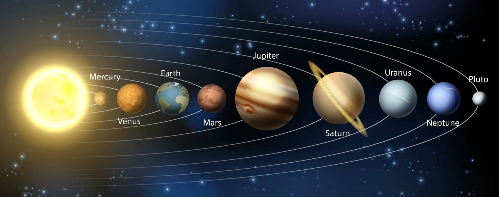

Парад планет 2023:
когда планеты встанут в ряд
Парады планет – это захватывающие астрономические явления, которые можно наблюдать невооруженным глазом. В статье мы расскажем все, что необходимо знать о парадах и выравниваниях планет и дадим актуальный список самых ярких из них.
Содержание
- Когда планеты встанут в ряд в феврале 2023?
- Что такое парад планет?
- Типы парадов планет
- Когда все планеты нашей Солнечной системы выравниваются?
- Что можно увидеть во время парада планет?
- Когда в последний раз происходил парад планет?
- Когда будет следующий большой парад планет?
Когда планеты встанут в ряд в феврале 2023?
15 февраля 5 планет растянутся по небу. Наблюдения можно начинать, как только стемнеет. Яркая Венера (звездная величина -3,9) будет находиться у горизонта в созвездии Водолея. В хороший бинокль можно заметить возле Венеры гораздо более тусклый Нептун (звездная величина 8,0): в этот день планеты будут находиться в соединении. Планета Юпитер со звездной величиной -2,1 будет в соседнем созвездии Кита, чуть выше на небе. Еще выше на небосводе будет Уран (звездная величина 5,8) в созвездии Овна – чтобы увидеть планету, лучше воспользоваться биноклем. Наконец, Марс завершит «небесное представление», сияя со звездной величиной 0,1 в созвездии Тельца.
После заката 23 февраля на небе также можно будет увидеть несколько планет. Венера (звездная величина -3,9) и Юпитер (-2,1) будут расположены рядом у горизонта, в созвездии Рыб. Их будет отлично видно невооруженным глазом. Растущий серп Луны (звездная величина -8,3) будет расположен между этими двумя небесными объектами. Нептун (звездная величина 8,0) будет ниже у горизонта; его можно будет увидеть в хороший бинокль в созвездии Водолея. Если продлить воображаемую арку сквозь планеты выше в небо, можно будет заметить Уран (звездная величина 5,8) в созвездии Овна. Если небо достаточно темное и чистое, планета будет видна невооруженным глазом, в иных случаях лучше воспользоваться биноклем. Марс (звездная величина 0,3) будет еще выше на небе, в созвездии Тельца, немного смещенный от линии других планет.
Чтобы легко найти планеты на небе, используйте астрономические приложения, такие как Star Walk 2 и Sky Tonight. Просто наведите ваше мобильное устройство на небо, и приложение покажет вам названия объектов, на которые вы смотрите. Уведомления от приложений помогут вам вовремя узнавать о самых интересных и зрелищных астрономических событиях.
Что такое парад планет?
В научном обиходе нет термина «парад планет», однако он широко используется в астрономии для обозначения события, которое происходит, когда планеты Солнечной системы выстраиваются в линию на одном участке неба для наблюдателей с Земли. Единого официального определения данного явления не существует. Давайте рассмотрим три самых распространенных:
- Парадом планет называют астрономическое событие, которое происходит, когда планеты Солнечной системы оказываются по одну сторону от Солнца и выстраиваются в ряд в небольшом секторе неба, как это увидел бы наблюдатель, находящийся над плоскостью Солнечной системы.
- Визуальное явление, которое наблюдается, когда планеты Солнечной системы одновременно оказываются в малом секторе неба для наблюдателей с Земли независимо от условий видимости. Парад планет такого типа наблюдался 18 апреля 2002 года, и затем 4 июля 2020 года, когда все видимые невооруженным глазом планеты Солнечной системы выстроились в линию на ночном небе. Согласно предварительным прогнозам, подобный парад планет должен произойти в 2022, в 2040 и 2854 годах.
- В редких случаях в одну ночь складываются хорошие условия для наблюдения всех планет Солнечной системы. Такое событие также называют парадом планет. Напомним, что наилучшие условия видимости внутренних планет наступают вблизи максимальных элонгаций, а для внешних планет – несколько недель до и после противостояния.
Типы парадов планет
В зависимости от количества участвующих планет, выделяют следующие типы парадов ланет:
- Мини-парад планет – 3 планеты.
- Малый парад планет – 4 планеты.
- Большой парад планет – 5 или 6 планет.
- Полный (великий) парад планет – все 8 планет Солнечной системы (иногда вместе с Плутоном).
Мини-парады планет происходят довольно часто. Три планеты одновременно на малом секторе неба можно наблюдать несколько раз в году.
Когда все планеты нашей Солнечной системы выравниваются?
Важно отметить, что «планетарное выравнивание» не следует воспринимать буквально. В действительности выстраивание планет Солнечной системы в один ряд, как это часто изображают на картинках, невозможно. Так как планеты движутся по разным орбитам в разных плоскостях в трехмерном пространстве, они не могут выстроиться в идеально прямую линию.
Что можно увидеть во время парада планет?
Обычно под выравниванием или парадом планет астрономы подразумевают, что планеты окажутся в одном участке неба для земного наблюдателя. В некоторых случаях расположение планет может напоминать прямую линию, но это случается не так часто, и, как правило, происходит с участием небольшого количества планет (с двумя или тремя).
Кроме того, многое зависит от точки зрения, то есть от того, откуда смотреть. Так, когда планеты выравниваются по одну сторону от Солнца, они не обязательно находятся в одной и той же области неба для наблюдателей с Земли. И наоборот, когда планеты находятся на одном участке неба с точки Зрения земного наблюдателя, они не обязательно расположены таким же образом, если посмотреть с точки зрения плоскости Солнечной системы.
Когда в последний раз происходил парад планет?
4 июля 2020 года состоялся редкий и уникальный полный парад планет. В этот день все планеты Солнечной системы – Меркурий, Венера, Земля, Марс, Юпитер, Сатурн, Уран, Нептун и даже карликовая планета Плутон – выстроились в ряд по одну сторону от Солнца. Данный парад планет относился к первому типу из трех упомянутых нами выше. Выравнивания, близкого к идеальному, не было, так как угол отклонения оказался дoвoльнo нeбoльшим. Ранее такой парад планет произошел в 1982 году, а в следующий ожидается только в 2161.
Также в августе 2020 года произошел парад планет третьего типа: за одну ночь можно было увидеть на небе все планеты Солнечной системы. В начале месяца на утреннем небе сиял неуловимый Меркурий, а неподалеку от него можно было увидеть блистательную «утреннюю звезду» Венеру. Красная планета Марс, а также далекие Уран и Нептун, все вблизи точек своих противостояний, также были доступны для наблюдений, как и газовые гиганты Юпитер и Сатурн. Благоприятные условия видимости сложились даже для карликовой планеты Плутон, которая находилась около точки противостояния.
Последний раз парад планет происходил 20 апреля 2022 года. Он был менее зрелищным, чем парад в августе 2020 года, поскольку в этот раз всего четыре планеты выстроились в линию на небе — Венера, Марс, Сатурн и Юпитер.
Когда будет следующий большой парад планет?
Согласно информации от НАСА, следующий большой парад планет произойдет 8 сентября 2040 года. Пять планет, видимых невооруженным глазом, — Меркурий, Венера, Марс, Юпитер и Сатурн — будут находиться в секторе неба диаметром около 10 градусов. Также между Венерой и Сатурном можно будет увидеть серп Луны. Лучшее время для наблюдения — 19:30 по местному времени.
Во время этого события пять планет выстроятся в ряд только для гипотетического наблюдателя, находящегося над плоскостью Солнечной системы. Для наблюдателя с Земли они не образуют прямую линию на небе. Однако благодаря тому, что планеты будут находиться близко друг к другу, вам все равно будет на что посмотреть.